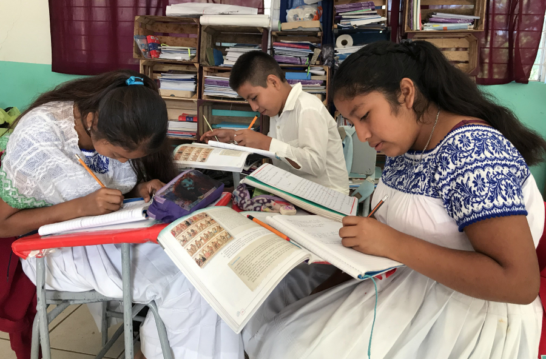

En México existe, desde 2003, la Ley General de los Derechos Lingüísticos de los Pueblos Indígenas (LGDLPI), misma que tiene como meta reconocer la diversidad lingüística de la población mexicana y garantizar el derecho que toda y todo mexicano tiene a “comunicarse en la lengua de la que sea hablante, sin restricción en el ámbito público o privado, en forma oral o escrita,
en todas sus actividades sociales, económicas, políticas, culturales, religiosas y cualesquiera otras”
La LGDLPI es producto de distintas legislaciones nacionales y acuerdos internacionales, a los que México se suscribe, que buscan otorgar un reconocimiento a las poblaciones originarias y sus derechos, pero también es fruto de las distintas movilizaciones y acciones de resistencia que han encabezado los propios pueblos indígenas del país, en una búsqueda por ser reconocidos no sólo como sujetos de interés público sino como sujetos de derecho.
En el artículo 11 se menciona lo siguiente: “Las autoridades educativas federales y de las entidades federativas, garantizarán que la población indígena tenga acceso a la educación obligatoria, bilingüe e intercultural, y adoptarán las medidas necesarias para que en el sistema educativo se asegure el respeto a la dignidad e identidad de las personas, así como a la práctica
y uso de su lengua indígena. Asimismo, en los niveles medio y superior, se fomentará la interculturalidad, el multilingüismo y el respeto a la diversidad y los derechos lingüísticos".
